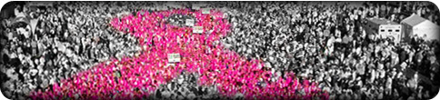

The Beginning of the Komen Race
In 1983, Nancy Brinker created and organized the first Susan G. Komen Race for the Cure® in Dallas, Texas, with 800 participants. Today, the Komen Race for the Cure series is the largest 5K series in the world. There are more than 100 Races with well over one million participants each year.
Funds raised at Komen Race for the Cure events help to support community outreach programs in 18,000 communities. Up to 75 percent of the net income from each Race stays in the local community to fund breast health education and breast cancer screening and treatment projects. The remaining 25 percent supports the Komen Award and Research Grant Program, funding groundbreaking breast cancer research, meritorious awards and educational and scientific conferences around the world.
A significant number of people who participate in the Race do so because of a personal connection with the disease, either through their own diagnosis or in support or honor of a friend or a loved one. But because breast cancer knows no age, gender, social or geographic boundaries, we must all learn what we can do to protect ourselves.
When Breast cancer is found
while still confined to the Breast, The five-year
survival rate is more than 95 percent.
Test your breast health knowledge today by taking our breast health quiz.
About I AM THE CURE.®
I AM THE CURE.® is a breast health program from the Susan G. Komen Race for the Cure that teaches people simple steps they need to know to take charge of their breast health. It speaks to the importance of early detection and provides simple, action-oriented chants that Race participants can take home and put into action. These chants, and the simple steps that lead to early detection, will come to life as more than a million Komen Race for the Cure participants make I AM THE CURE.® their rallying cry on Race day. Go to the Chant Creator.
Breast Cancer Risk Matrix
This table lists the known risk factors for breast cancer and their relative risks. A relative risk indicates how much higher the risk of breast cancer is in people who have a particular factor compared to people who don't. Take a look.